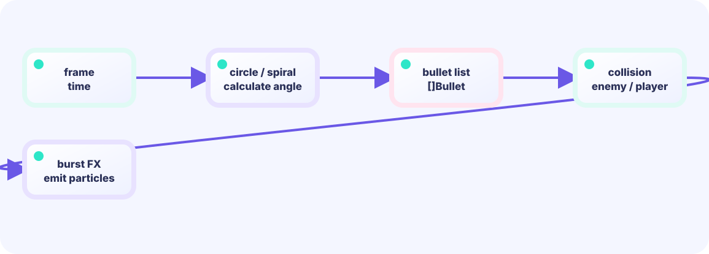

PRESENTATION STATE
Script owns only Frame and timed Cues
Dangerous bullets are already absent. clearedBullets is a short-lived display copy discarded when Script completes.
★★★★★ / PLAYABLE
The finale layers several effects over time. Rules delete in-range bullets in the same tick and convert their count to score. BombScript then issues freeze and flash at frame 0, shockwave at 1, bullet dissolve at 4, and confetti at 12. Equal Strength and Frame produce equal cue streams for replay and tests.
This lab also sits on the LEVEL 01 boundary between Update (state) and Draw (pixels). Here we dig one layer deeper into projecting the same state through different renderers.
ADVANCED-FX DESIGN RULE
updatePlay() first commits the correct collision, score, or board. It hands that fact across once as a value or event. Presentation then advances interpolation, poses, trails, and particles. Draw only reads state; it never edits score or coordinates. This boundary supports both a rich screen and unit tests that need no GPU.
PATTERN A12 / DETERMINISTIC EFFECT SCRIPT
Growing a giant timer switch destroys ordering, simultaneous cues, skipping, and replay tests.
PRESENTATION STATE
Dangerous bullets are already absent. clearedBullets is a short-lived display copy discarded when Script completes.
TEST CONTRACT
PLAYABLE / LIVE GO + MOUSE
Dangerous bullets leave collision instantly, followed by pause, white-orange flash, double wave, outline dissolve, and confetti.
FIRST-TIME READER
Find where this one line is used, then follow how its value changes on screen. This is the shared game-state boundary: add rules in Update, then choose an independent presentation in Draw. The numbered steps below add one system at a time.
ONE RULE TO TRACE
Match the explanation to this line, then test the change in the game.
bullets = bullets[:0]; fx.Bomb(playerX,playerY)
DEEP DIVE / DETERMINISTIC EFFECT SCRIPT
Bomb safety begins with bullets disappearing first. clearedBullets is a presentation copy for dissolve and never re-enters collision. EffectScript is an array of timed Cues advanced once per tick. The particle system also has a cap, preventing mass clears from exploding load.
Delete in-range bullets and score now.
bullets = keep
Place Freeze/Flash/Wave at explicit frames.
BombScript(strength)
Draw deleted bullet outlines briefly.
clearedBullets
TRACE IT / RULE → MOTION → PIXELS
Record Current at each tick and require exact equality. Any randomized particle placement remains outside the Cue contract.
IN THE DEMO
Store what starts on which frame as data and interpret each Cue in a dispatcher.
g.bullets, g.clearedBullets = resolveBomb(g.bullets, center, radius)
g.bombScript = vfxmotion.BombScript(strength)
for _, cue := range g.bombScript.Current() {
g.dispatchCue(cue) // freeze, flash, wave, dissolve, confetti
}
g.bombScript.Advance()TEST THE CONTRACT
Separately verify equal Cue streams, fewer bullets immediately after doBomb, and MaxParts enforcement.
FAILURE MODE
A translucent “safe-looking” bullet that still hurts communicates the opposite of the rule.
DESIGN PAYOFF
Cue scripts make skip, fast-forward, replay, and quality-specific presentation possible from the same facts.
FEEDBACK